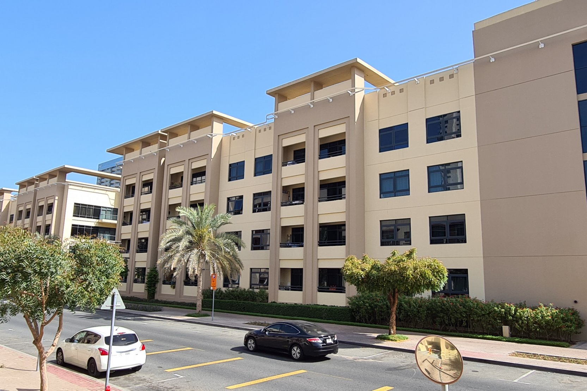

Suggestions...
“I am an elderly woman who requires medical care. The poor air quality makes it very difficult for me to get to places. I request for a solution.”- a woman who’s spent over 30 years in the location
“I can’t find recycling bins anywhere! Maybe this is why we have 3 TONS of waste……”- a recycling enthusiast
“There is sooo much humidity and no wind…can the weather department fix this somehow?”- a downcast citizen
Statistics
Population Density (per hectare): 2.33
Temperature (°C): 30
Relative Humidity (%): 50
Windspeed (km/h): 4.3
Air Quality Index: 121 (Poor)
Wastage: 3 million tons
Employment Rate: 75.2%
Economic Output: $14.3 billion
Risk Percentage: 18.88%
Population: 2.20%
Temperature: 36.36%
Humidity: 33.33%
Wind Speed: 3.66%
Comments
Conditions moderate to high
Moderate economic activity with steady employment.
Air quality is quite poor.